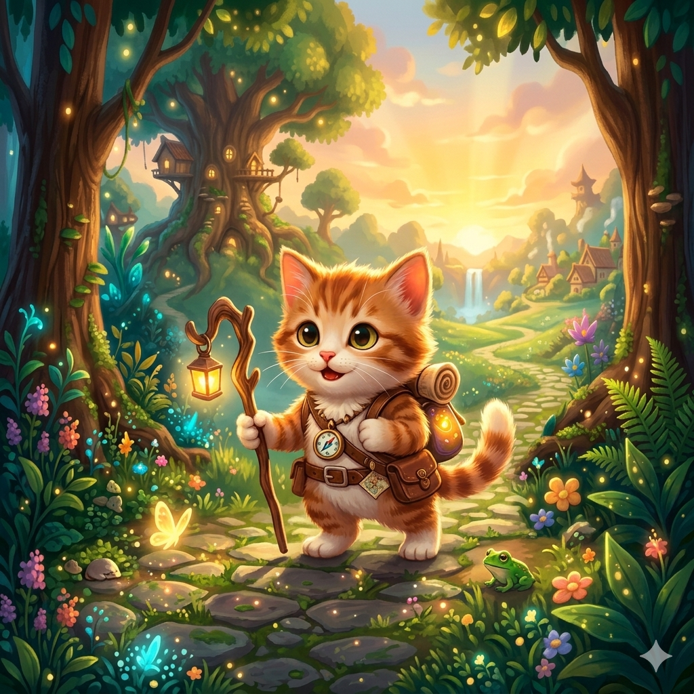
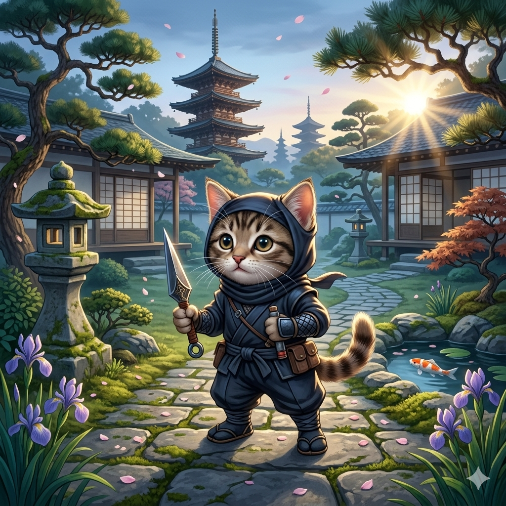
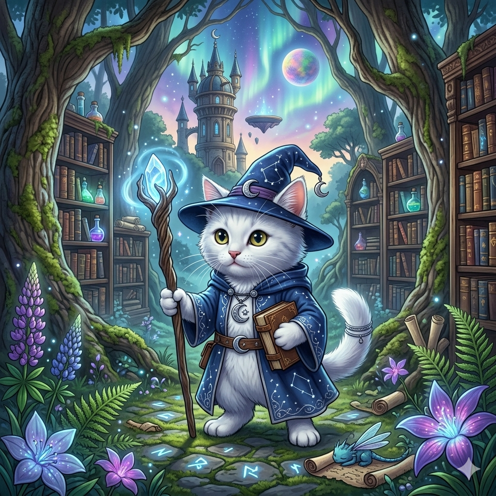
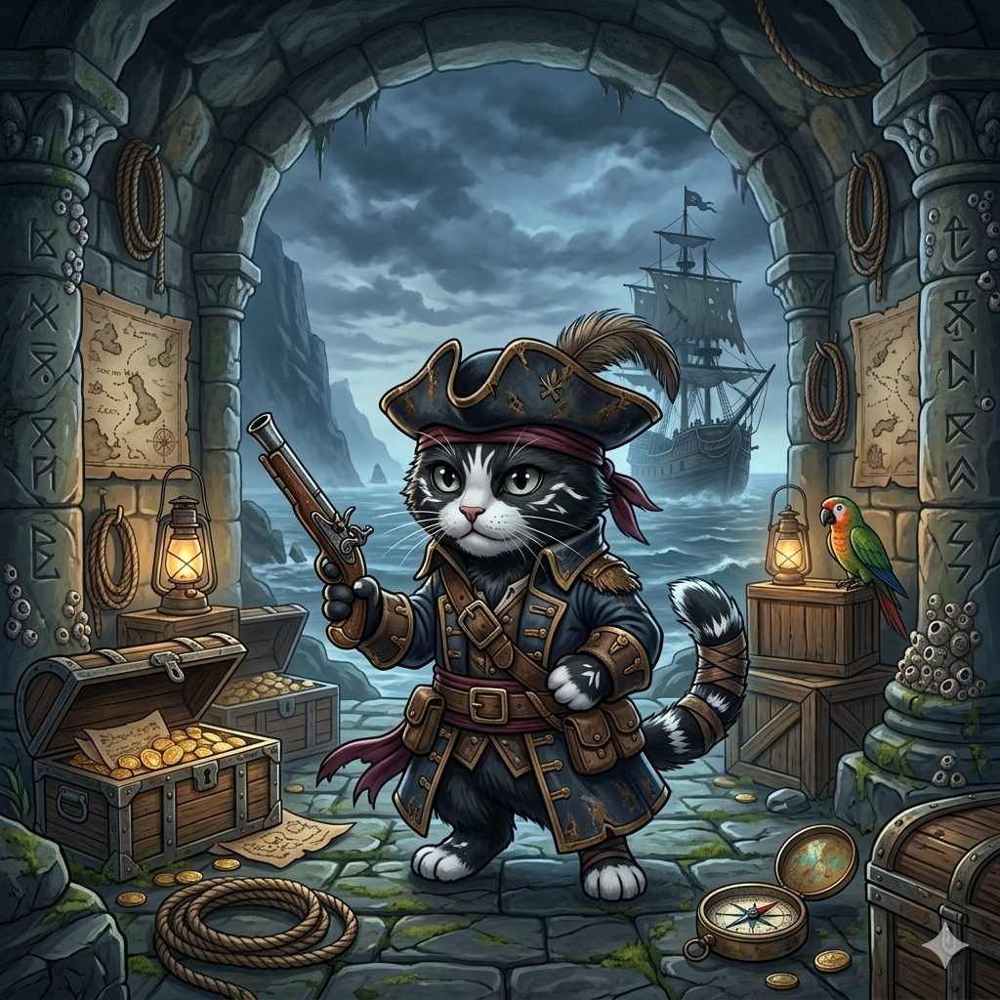

Gatito atigrado naranja, lleno de curiosidad y valentía.
Con su mochila y su brújula, siempre está listo para explorar y adentrarse en lo desconocido.

Gatito atigrado gris, con habilidades de sigilo y agilidad.
Con su katana y su capa, siempre está listo para enfrentar cualquier desafío con destreza y precisión.

Gatito blanco, con poderosas habilidades mágicas.
Con su bastón y su tomo de hechizos, siempre está listo para desatar el poder de la magia y proteger a sus amigos.

Gatito esmoquin con un espíritu indomable de aventura y coraje.
Junto a su fiel loro, siempre está listo para navegar los mares y liderar a su tripulación en busca de tesoros perdidos.